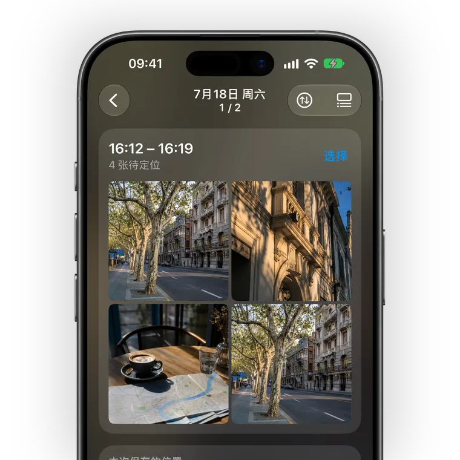
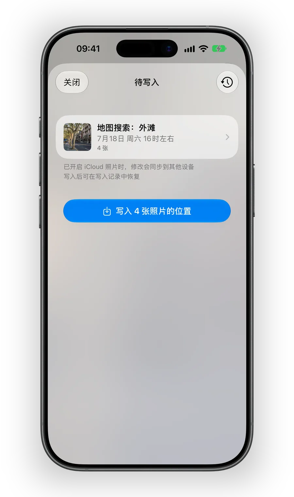
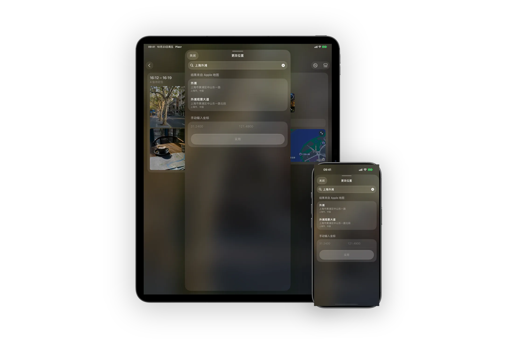

从缺少位置的照片开始 按月份浏览，随时停下
Placr 只挑出没有 GPS 位置的照片，按拍摄时间分组排队。可以按月份、参考条件和处理进度筛选，分错组的照片也能单独移出。

扫描一次照片图库，把缺少位置的照片按拍摄时间分组，参考同一时段的照片建议地点，确认后批量写入。写入留有记录，随时可以恢复。
按时间分组 · 就近参考
扫描一次「照片」图库，缺少位置的照片（包括视频）按拍摄时间自动分组。按月份逐组审阅，随时停下，下次继续。
Placr 只挑出没有 GPS 位置的照片，按拍摄时间分组排队。可以按月份、参考条件和处理进度筛选，分错组的照片也能单独移出。

拍摄时间相近、已经带有位置的照片会显示在一旁，直接采用它的位置；也可以在 Apple 地图上搜索地点，或手动输入坐标。
同一时段已带位置的照片自动成为候选；参考照片直接显示在旁边，一眼就能核对。
每组先保存候选位置，批量确认页再检查一遍照片与地点，全对才进入写入。
批量确认后统一写回「照片」；每次写入都留下本地操作记录，之后随时可以恢复。
确认写入 · 记录与恢复
Placr 不会自动修改照片。候选位置先逐组保存，批量确认页检查无误后才写入；每次写入都留下操作记录，写错了可以恢复。

截图演示「确认写入」与「写入记录」两个页面。每批写入都会记录当时的位置与时间，在记录页可以整批恢复。
拍摄时间、照片内容与其他信息都保持原样，不删除照片。恢复时只有当照片位置仍是当时写入的值才会还原，不会覆盖你后来在「照片」中做出的修改。
搜索与坐标 · iCloud 同步
用 Apple 地图搜索地点，或手动输入坐标；找到的地方会带着拍摄时间一起写入。审阅进度通过 iCloud 在你的设备间同步。

审阅进度与写入记录通过你自己的 iCloud 私有数据库同步，不需要注册账号。Mac、iPhone、iPad 随处继续，照片本身仍留在各自设备上。
关于使用与隐私
Placr 不上传你的照片，没有注册账号，没有广告，也没有订阅。免费版每 7 天可以保存 20 个候选组；一次性购买即可永久解除限制。
解答与支持
浏览、分组、就近建议、地图搜索和 iCloud 进度同步都免费；候选组的保存每 7 天可免费进行 20 次，每组不限张数，失败或取消不计次数。一次性购买可永久解除限制。
不会。照片内容、缩略图和文件名始终留在设备上。地点搜索会把文字和附近地点的坐标发给 Apple 地图；开启 iCloud 同步后，审阅进度只写入你自己的 iCloud 私有数据库。
每次写入都留有操作记录。在记录页选择那次写入并恢复即可；只有当照片的位置仍是当时写入的值时才会还原，不会覆盖你后来在「照片」中做出的修改。
只写入位置，不改照片内容、拍摄时间与其他元数据，也不删除照片。没有 GPS 位置的视频同样可以补上位置。
Placr 适用于 Mac、iPhone 与 iPad，需要 macOS 26、iOS 26 或 iPadOS 26。Mac 版已在 App Store 上架，iPhone 与 iPad 版即将推出；一笔购买在全平台通用。